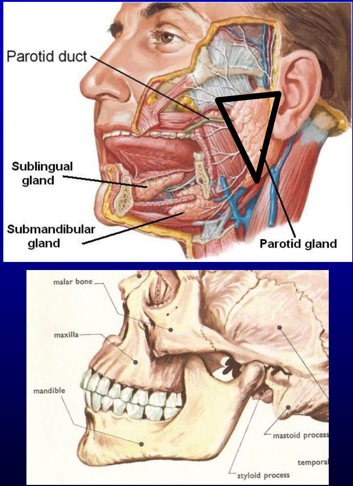
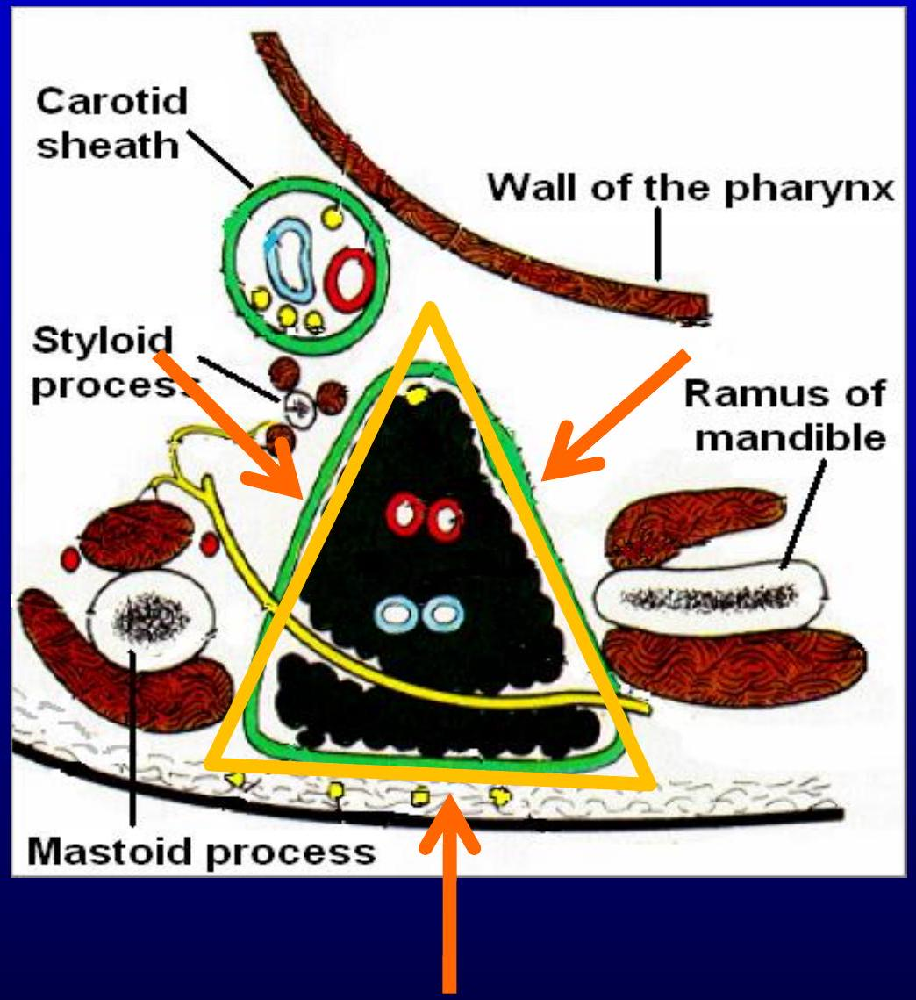
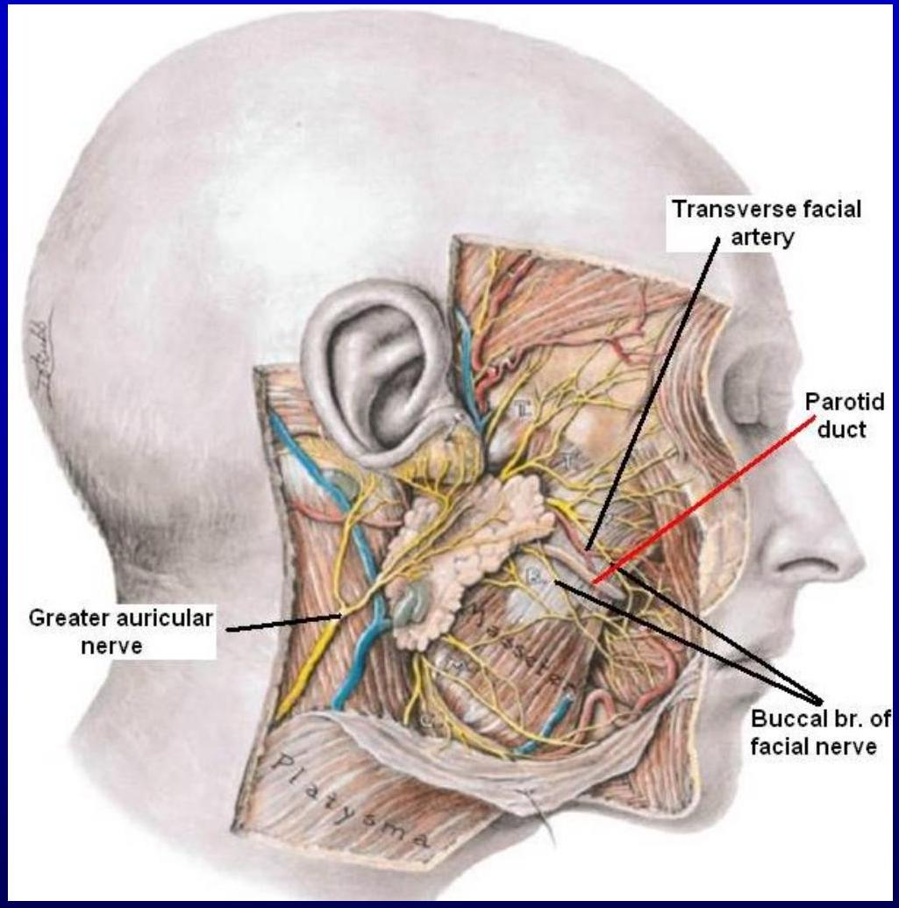
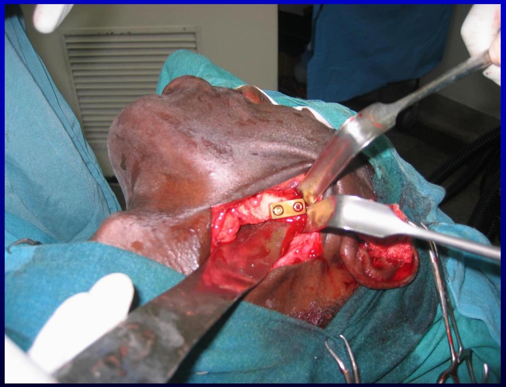
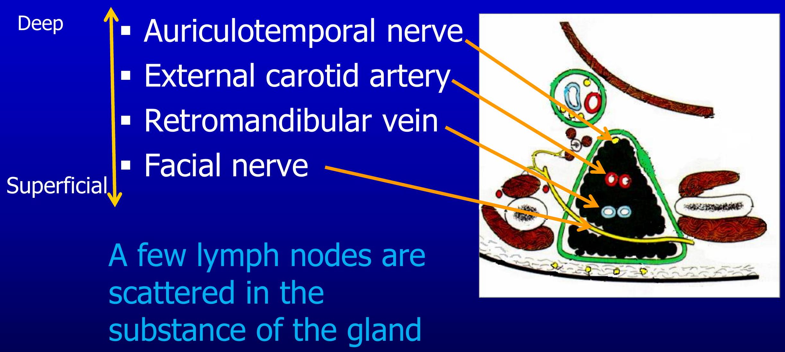
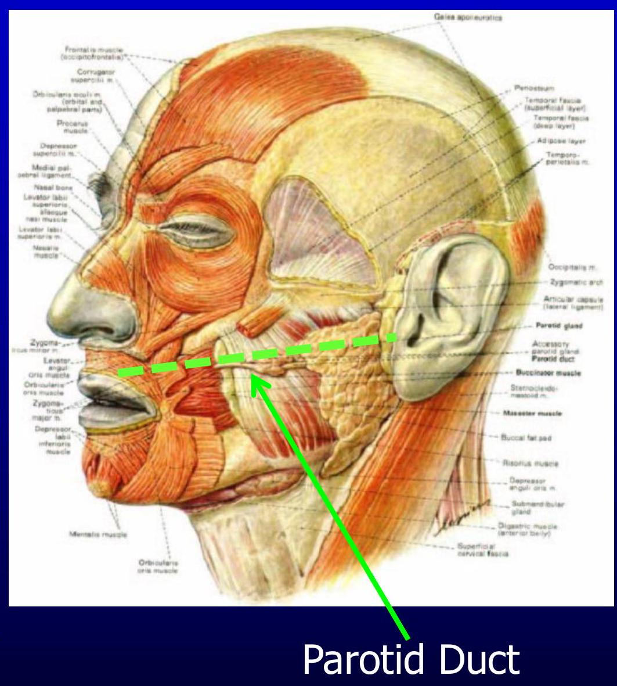
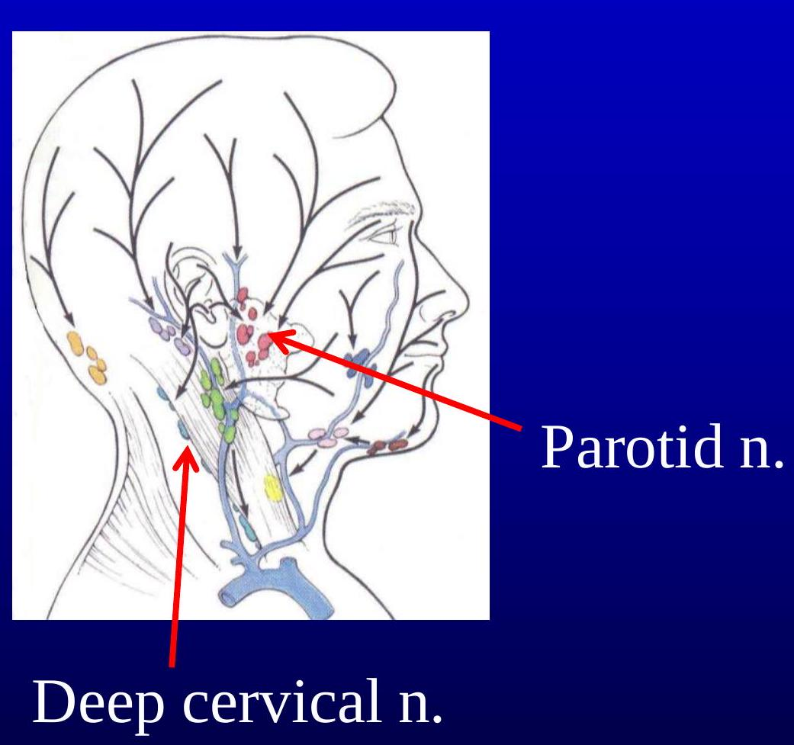
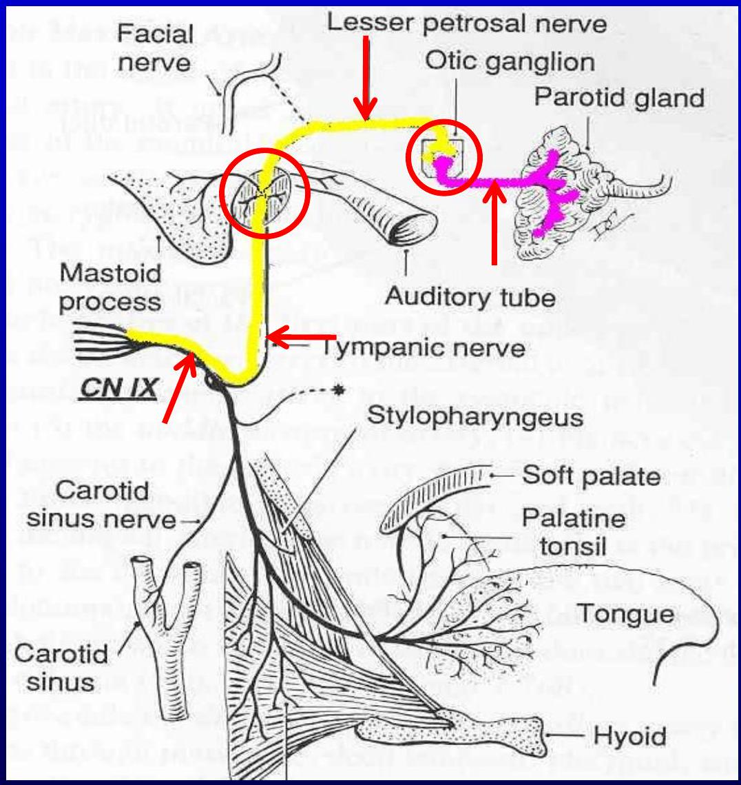
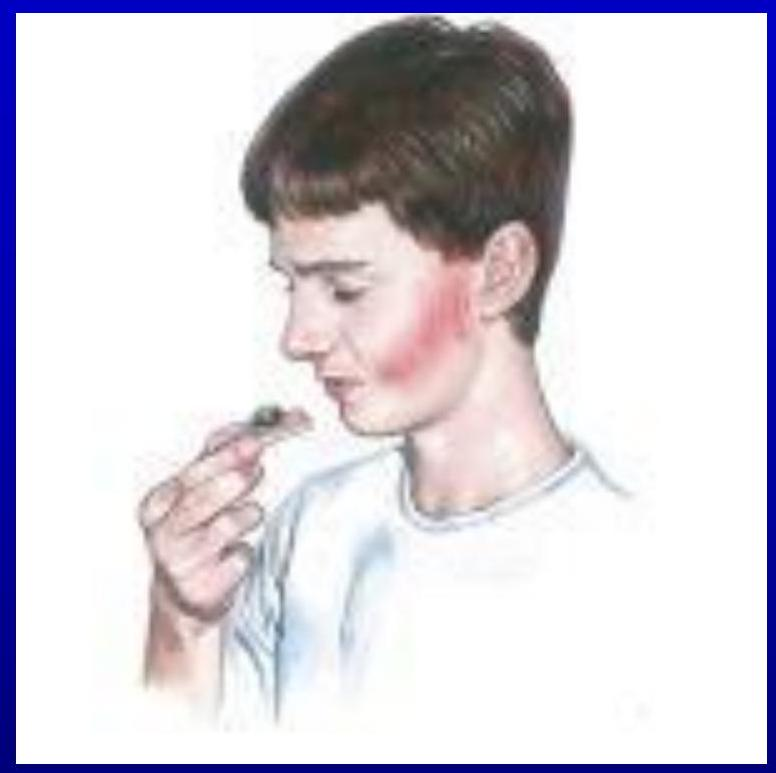

The Parotid Region
The Parotid Region
The Parotid Region
-
The region on the lateral surface of the face that comprises the parotid gland & the structures immediately
 related to it
related to it
Parotid Gland
- Largest of the salivary glands
- Located subcutaneously, below and in front of the external auditory meatus
- Occupies the deep hollow behind the ramus of the mandible
-
Wedge-shaped when viewed externally, with the base above & the apex behind the angle of the mandible
 - Wedge-shaped in horizontal section with the base in the lateral position and apex against the pharyngeal wall.
- It exhibits 3 surfaces:
- Lateral
- Anteromedial
-
Posteromedial

Lobes
- The facial nerve courses horizontally through the gland and divides it into:
- Superficial lobe
-
Deep lobe

Facial nerve
Processes
The gland is an irregular lobulated mass, sends 'processes' in various directions. These include:
- Glenoid process, that extends upward behind the temporomandibular joint, in front of external auditory meatus
- Facial process, that extends anteriorly onto the masseter muscle
- Accessory process (part), small part of facial process lying along the parotid duct
- Pterygoid process, that extends forward from the deeper part, lies between the medial pterygoid muscle & the ramus of mandible
-
Carotid process, that lies posterior to the external carotid artery

Capsules
- The parotid gland is enclosed in two capsules:
- An inner connective tissue capsule
- An outer dense fibrous capsule derived from the investing layer of the deep cervical fascia
- The deep cervical fascia extends upward, reaches the inferior border of parotid gland, splits into the superficial & the deep layer, to enclose the gland
-
Above the gland, the:

- Superficial layer gets attached to the zygomatic arch
- Deep layer gets attached to the tympanic plate of temporal bone
A portion of fascia extending from the styloid process to the angle of mandible is called stylomandibular ligament. It separates the parotid gland from the submandibular gland
Relations
- Superficial (lateral):
- Skin & superficial fascia
- Great auricular nerve
- Parotid lymph nodes
- Superior:
- External auditory meatus
- Temporomandibular joint
-
Its glenoid process is
 related to the auriculotemporal nerve
- Anteromedial:
- Stylomandibular ligament
- Medial pterygoid
- Posterior border of the ramus of mandible
- Massater
- Terminal branches of the facial nerve
- Temporomandibular joint
- Posteromedial:
- Carotid sheath with its contents
- Styloid process & attached muscles
- Facial nerve
- Posterior belly of digastric muscle
- Mastoid process
- Sternocleidomastoid
The Parotid Bed
-
The structures intimately related to the deep surface of the parotid gland (anteromedial & posteromedial relations)


Structures Coursing Within the Parotid Gland

Parotid (Stensen's) Duct
- About 2 inches long
- Emerges from the facial process of the gland
- Passes forward over the lateral surface of the masseter muscle
- about a fingerbreadth below the zygomatic arch
- accompanied by the:
- transverse facial vessels & upper zygomatic branches of facial nerve above
-
lower zygomatic branches of facial nerve below

- Turns around the anterior border of masseter muscle
- Pierces the:
- Buccal pad of fat
- Buccopharyngeal fascia
- Buccinator muscle &
- Buccal mucosa
-
Opens into the vestibule of mouth on a small papilla, opposite the second upper molar tooth

- The oblique passage of the duct in the buccinator muscle acts as a valve-like mechanism & prevents inflation of the duct during blowing
- The duct can be rolled over the clenched masseter muscle
-
The duct is represented by the middle $1 / 3$ of a line extending from the tragus of the auricle to a point midway between the ala of nose & upper lip

Arterial supply: \ External carotid artery & its terminal branches

Superficial temporal a.
> External carotid a.
Venous drainage: Into the retro-mandibular vein
Retromandibular v.
Lymph Drainage: Into the parotid & then into the deep cervical lymph nodes

Nerve Supply
- Sensory :
- Auriculotemporal n.
- Autonomic:
- Sympathetic through plexus around the arteries (T1 $\rightarrow$ SCG $\rightarrow$ plexus around ECA)
-
Parasympthetic through otic ganglion (CN9 $\rightarrow$ tympanic n. $\rightarrow$ tympanic plexus $\rightarrow$ lesser petrosal n. $\rightarrow$ otic ganglion $\rightarrow$ auriculotemporal n.)

Clinical Anatomy
- Parotid duct being a superficial structure, is prone to get damaged in injuries, or during surgical procedures on the face
- Parotid neoplasms (malignant) are very invasive and quickly involve the facial nerve causing facial palsy
- Inflammation of parotid gland results in painful swelling because of a tight capsule enclosing the gland. The swollen glenoid process exaggerates this pain on chewing
-
Frey's syndrome: a disorder characterized by recurrent episodes of localized facial flushing and/or sweating in the area over the parotid gland in response to gustatory stimuli
 - This is due to aberrant nerve regeneration after injury (a communication develops between the auriculo-temporal & greater auricular nerves such that parasympathetic fibers migrate into the cutaneous sympathetic nerves that supply the sweat glands)
Thank You